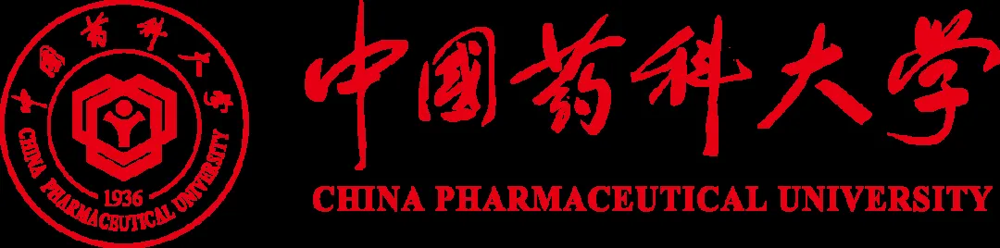

中国药科大学何婉婷/戴建君课题组高薪诚聘co-PI、博士后、科研助理（此招聘长期有效）
原文：https://mp.weixin.qq.com/s?__biz=MzAwMzIzOTk5OQ==&mid=2247534131&idx=2&sn=9dedce3d3bb80f66cf20cd021ad84c20&chksm=9b3c3f63ac4bb6754f33021c734fc54d9b93bef9ff4770f64203bc606bfa4548aaaaccd55e4f#rd 合集：求职/求学/招聘
01
写在前面
我们长期发布招聘/求职板块(甚至我给自己都发了求职：Biomamba求职| 国奖+4篇一作SCI)，欢迎各位老师/老板欢迎联系~我们也在招贤纳士Biomamba生信基地秋季招聘开启！其它需要求职的小伙伴也欢迎把简历发给我们[Biomamba_zhushou]，大家一起找工作/学习。用人单位也可以联系我们免费刊登招聘信息~
02
ABOUT US

一、单位简介中国药科大学是教育部直属、国家“211工程”和“985工程优势学科创新平台”建设高校，2017年成为国家“双一流”建设高校，是一所以药学为特色的多科性、研究型大学，是我国历史上第一所由国家创办的药学高等学府（http://www.cpu.edu.cn）。 二、课题组介绍何婉婷，教育部国家级人才专项入选者、中组部国家级高层次青年人才、中国药科大学教授、博士生导师。致力于微生物学与病毒学领域研究，迄今以第一作者或通讯作者（含共同）在国际高水平期刊发表SCI论文二十余篇，包括Nature 1篇、Cell 2篇等。主持多项国家级课题。曾获得第二届中国生物物理学会女科学家优秀科研成果奖二等奖，江苏省农学会青年科技奖，主持江苏省自然科学杰出青年基金，承担多项国家科技重大专项，获批多项国家发明专利与软件著作权。戴建君，中国药科大学党委书记、教授、博士生导师。历任南京农业大学团委书记、学生工作部处处长、动物医学院党委书记、党委办公室主任、统战部部长、机关党委书记、南京农业大学副校长、中国药科大学党委副书记、纪委书记。兼任中国微生物学会兽医微生物学专委会常务理事，曾任全国兽医专业学位研究生教育指导委员会副主任委员、中国进出境生物安全研究会副会长。在国际期刊Nature Communications、Advanced science、Advanced Functional Materials、PLoS pathogens、Analytical chemistry等发表论文170余篇；承担国家重点研发计划项目、973项目课题、国家自然科学基金面上项目等10余项；获得授权国家发明专利28项。 三、主要研究方向1. 病毒组、病毒感染互作机制研究；2. 消化系统微生态紊乱参与疾病发生发展的机制研究；3. 微生物组高通量测序新技术、生物信息学与算法开发。03
JOIN US
招聘要求现因课题组发展需要，现面向国内外诚招教授（编制正高级）、研究员（编制正高级）、副教授（编制副高级）、副研究员（编制副高级）、特聘副研究员、讲师、博士后等系列岗位，此招聘长期有效。申请人要求： （一）co-PI（若干名）1. 岗位要求（1）具有微生物学、病毒学、肿瘤免疫学、分子生物学、细胞生物学、生物信息学等相关学科基础，熟悉多组学数据分析及等交叉研究经验者优先；（2）具有良好的英语阅读、写作及交流能力，近五年以第一作者发表过SCI论文（高质量论文可包括共同第一作者）；（3）具有较强地逻辑思维和独立开展科研项目的能力，较好的团队协作精神。（4）年龄不超过38周岁、身心健康、热爱科学、良好的团队精神、能长期稳定工作者优先；2. 岗位职责（1）承担和开展课题研究以及参与学术论文撰写；（2）独立/协助PI指导研究生的科研训练和工作。3. 岗位待遇支持与协助申报国家级、省部级青年人才计划，经过学校高层次人才引进评审会学术评审后，纳入学校“兴药学者计划”的相应层次，提供具有竞争力的薪酬、充足的安家费及住房补贴、满足科研需求的科研启动经费和科研空间，根据相关政策协助办理落户等。 （二）博士后（若干）1. 岗位要求（1）具有微生物学、病毒学、肿瘤免疫学、分子生物学、细胞生物学、生物信息学等相关学科基础，熟悉多组学数据分析及等交叉研究经验者优先；（2）在国内外获得博士学位不超过三年；（3）年龄在35周岁以下；（4）在JCR分区Q1/Q2或中科院分区1区/2区发表SCI论文至少1篇。2. 岗位职责：（1）在课题组长指导下独立开展科学研究及论文撰写；（2）协助课题组项目申请、指导研究生。3. 岗位待遇支持与协助申报国家级、省部级青年人才计划，提供具有竞争力的薪酬、充足的安家费/住房补贴、满足科研需求的科研启动经费和科研空间。 （三）科研助理（1名）1. 岗位要求（1）已获得或即将获得生物、医学相关专业的硕士或优秀本科毕业生优先；（2）工作细心、责任心强，具有良好的沟通和协调能力；（3）有实验室工作经验者优先。2. 岗位职责负责实验室的日常管理，包括试剂订购、设备维护、财务报销等。协助团队成员进行分子生物学、细胞培养等基础实验。3. 岗位待遇提供有竞争力的薪酬待遇，根据相关政策协助办理落户等。

联系方式
 请将个人详细简历（包括个人基本信息、学习工作经历、参与科研项目与SCI论文列表）及相关附件证明材料发送至邮箱：hewt@cpu.edu.cn。注明岗位应聘+姓名，例：“教授应聘+姓名”。
请将个人详细简历（包括个人基本信息、学习工作经历、参与科研项目与SCI论文列表）及相关附件证明材料发送至邮箱：hewt@cpu.edu.cn。注明岗位应聘+姓名，例：“教授应聘+姓名”。